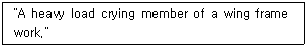
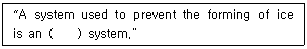
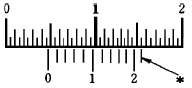

항공기관정비기능사 (2007-07-15 기출문제)
1과목: 비행원리
1. NACA 5자 계열의 날개골을 표시한 다음의 보기에서 밑줄 친 '18'이 의미하는 것은?
- 최대 두께가 시위의 18% 이다.
- 최대 두께의 크기가 시위의 18% 이다.
- 최대 캠버의 위치가 시위의 18% 이다
- 평균 캠버선의 뒤쪽 18% 가 직선이다.
(정답률: 71%)

2. 방향키 부유각(rudder float angle)에 대한 설명으로 가장 올바른 내용은?
- 방향키를 자유로 하였을 때 공기력에 의해 방향키가 자유로이 변위되는 각
- 방향키를 작동시켰을 때 방향키가 왼쪽으로 변위되는 각
- 방향키를 작동시켰을 때 방향키가 오른쪽으로 변위되는 각
- 방향키를 작동시켰을 때 방향키가 왼쪽과 오른쪽으로 변위되는 각
(정답률: 79%)
3. 실제 공기 중에서 프로펠러 1회전 당 깃이 진행한 거리를 무엇이라고 하는가?
- 평균 공력 피치(mean aerodynamaic pitch)
- 유효 피치(effective pitch)
- 산술적 피치(geometric pitch)
- 기하학적 피치 (geometric pitch)
(정답률: 83%)
4. 항공기의 날개를 지나는 공기의 흐름에서 레이놀즈수와 천이점과의 관계를 가장 올바르게 설명한 것은? (문제 오류로 복원중입니다. 보기내용을 아시는 분께서는 오류신고를 통하여 내용작성 부탁드립니다. 정답은 1번입니다.)
- 레이놀즈수가 커지면 커질수록 천이점은 앞전 부근으로 이동한다.
- 레이놀즈수가 작으면 작을수록 천이점은 앞전부근으로 이동한다.
- 레이놀즈와 천이점이 같아지는 점에서 최대의 항력이 발행한다.
- 복원중
(정답률: 92%)
5. 비행기가 V의 속도를 갖고 수평선에 대해 θ의 각도로 상승하고 있을 때 상승률 (rate ofclimb)을 구하는 식으로 옳은 것은?
- V× cosθ
- V× tanθ
- V2 × cosθ
- V× sinθ
(정답률: 39%)
6. 유체의 흐름과 관련하여 동압(dynamiac pressure)에 대한 설명으로 가장 올바른 것은?
- 속도에 비례하고, 밀도에는 반비례한다.
- 속도의 제곱에 비례하고, 밀도에 비례한다.
- 속도와 밀도에 반비례한다.
- 속도에 비례하고, 밀도의 제곱에 비례한다.
(정답률: 73%)
7. 항공기가 등속도 수평비행을 하는 조건식으로 옳은 것은?
- L = W, T = D
- L = T, W = D
- L ≦ D, W ≧ T
- L ＞ W, T ＞ D
(정답률: 80%)
8. 헬리콥터의 총중량이 700kg, 회전 날개의 반지름이 2.5m, 회전 날개 깃수가 2개일 때의 원판 하중은 약 얼마인가?
- 30.65 ㎏/m2
- 35.65 ㎏/m2
- 61.30 ㎏/m2
- 142.60 ㎏/m2
(정답률: 65%)
9. 비행기가 가속도 없이 정상비행 할 경우 하중 배수는 얼마인가?
- 0
- 0.5
- 1.0
- 1.5
(정답률: 82%)
10. 다음 중 절대압력에 대하여 가장 올바르게 설명한 것은?
- 압력이 측정되는 곳에 대기압을 0(zero) 압력으로 하여 측정된 압력이다.
- 완전진공을 0(zero) 압력으로 하여 측정한 압력이다.
- 대기압과 계기압력의 차이다.
- 해면에서의 절대압력은 항상 0(ZERO)이다.
(정답률: 53%)
11. 큰 날개와 꼬리날개에 의한 무게중심 주위의 키놀이 모멘트 MC.G관계식으로 가장 올바른 것은?
- MC.G = MC.GWING - MC.GTAIL
- MC.G = MC.GWING + MC.GTAIL
- MC.G = MC.GWING × MC.GTAIL
- MC.G = MC.GWING ÷ MC.GTAIL
(정답률: 78%)
12. 비행기 날개에서 영양력 받음각(zero lift angeleof attack)이란 무엇인가? (단, CD : 항력계수, CL : 양력계수이다.)
- CD = 0 일 때의 받음각
- CL = 0 일 때의 받음각
- CD = 0 이고 , CL ≠ 0 일 때의 받음각
- CD ≠ 0 이고 , CL ≠ 0 일 때의 받음각
(정답률: 79%)
13. 헬리콥터의 수직꼬리 날개를 장착한 이유로서 가장 올바른 것은?
- 빗놀이 모멘트로 반작용 토크를 상쇄시키기 위하여
- 키놀이 모멘트로 토크를 상쇄시키기 위하여
- 옆놀이 모멘트로 토크를 상쇄시키기 위하여
- 키놀이와 옆놀이 모멘트로 토크를 상쇄시키기 위하여
(정답률: 63%)
14. 다음 부조종면은 어느 것인가?
- 도움날개
- 승강키
- 플랩
- 방향키
(정답률: 86%)
15. 다음 중 고양력 장치가 아닌 것은?
- 드래그 슈트
- 경계층제어 장치
- 앞전 플랩
- 슬롯
(정답률: 56%)
16. 다음 문장이 뜻하는 올바른 단어는?

- skin
- spar
- stringer
- rib
(정답률: 54%)
17. 항공기의 중량, 강도, 기관의 성능 등 감항성에 중대한 영향을 주는 작업은 다음 중 어디에 속하는가?
- 경미한 정비
- 예방 정비
- 수리
- 개조
(정답률: 60%)
18. TURN-BUCKLE로 연결할 때, 안전하게 결합 (잠김)된 상태로 가장 올바른 것은?
- 나사산이 3~4개 이상이 보여서는 안 된다.
- 나사산이 전혀 나오지 않게 잠겨져야 한다.
- CABLE을 장착하고 TURN BUKLE을 2회만 잠그면 된다.
- BARREL 중앙부의 양측에서 꼽은 부분이 서로 닿도록 잠겨져야 한다.
(정답률: 66%)
19. AN 45 - 6볼트(BULT)를 가장 올바르게 설명한 것은?
- 미 공·해군 표준으로서 지름은 5/16 in, 길이는 6/8 in
- 미 공·해군 표준으로서 지름은 5/8 in, 길이는 6/16 in
- 미 국립항공 기준으로서 지름은 5/16 in, 길이는 6/8 in
- 미 국립항공 기준으로서 지름은 5/8 in, 길이는 6/16 in
(정답률: 49%)
20. 접지의 목적에 대한 설명으로 틀린 것은?
- 정전기 축적을 막는다.
- 정전기 축적을 시킨다.
- 번개의 위험을 벗어나기 위한 작업이다.
- 모든 항공기에는 접지 장치가 별도로 있다.
(정답률: 52%)
2과목: 항공기정비
21. 포말 소화기는 어떤 소화방법에 해당하는가?
- 냉각소화방법
- 질식소화방법
- 빙결소화방법
- 희석소화방법
(정답률: 84%)
22. 항공기 외부세척의 종류로 가장 거리가 먼 것은?
- 습식 세척
- 건식 세척
- 광택 작업·
- 블라스트 세척
(정답률: 73%)
23. 항공기 지상안전에 대한 설명으로 가장 관계가 먼 내용은?
- 항공기를 운항할 때 조종에 관계되는 사고를 방지하고 예방하는 것
- 지상에서 고압가스를 취급할 경우 사고 방지에 유의 하는 것
- 겨울철에 지상에서 항공기를 취급할 경우 사고방지에 유의 하는 것
- 항공기 정비 작업시에 발생할 수 있는 각종 위험에 대비하여 사고를 방지하고 예방하는 것
(정답률: 70%)
24. 계기계통의 배관을 식별하기 위해 일정한 간격을 두고 색깔로 구분된 테이프를 감아 두는데 이 때 붉은 색은 어떤 계통의 배관을 나타내는가?
- 윤활 계통
- 압축공기 계통
- 연료 계통
- 화재방지 계통
(정답률: 68%)
25. 항공기 기체의 정비작업에서의 정시점검으로 내부구조 검사에 관계되는 것은?
- A 점검
- C 점검
- ISI 점검
- D 점검
(정답률: 72%)
26. 시각 점검(VISUAL CHECK)에 대한 내용으로 가장 올바른 것은?
- 상태를 점검하는 것으로 보조장비를 사용하여 점검하는 것을 말한다.
- 특수 장비를 사용하여 상태를 점검하는 것이다.
- 상태를 점검하는 것으로서 보조장비를 사용하지 않고 다만 육안으로 점검하는 것 이다.
- 여러 방법을 조합하여 상태를 점검하는 것이다.
(정답률: 84%)
27. 다음 ( )안에 알맞은 용어는?

- anti-icing
- refrigeratioin
- de-icing
- combustion
(정답률: 60%)
28. 다음 중 리벳의 제거 작업시 가장 먼저 해야 할 작업은?
- 줄 작업
- 센터 펀치
- 드릴링
- 펀치 제거
(정답률: 65%)
29. 다음 중 비파괴검사에 속하지 않는 것은?
- 자분탐상검사
- 방사선투과검사
- 와전류탐상검사
- 현미경조직검사
(정답률: 88%)
30. 토크 작업 시 사용하는 다음의 공구 중 작은 토크값으로 스크루를 체결할 때 사용하는 것은?
- preset torque driver
- deflecting beam torque wrench
- rigid frame torque wrench
- audible indicating torque wrench
(정답률: 62%)
31. 스트링어(stringer)가 절단되어 수리를 할 할 경우, 수리 방법에 대한 설명으로 가장 관계가 먼 내용은?
- 보강하는 재료의 다면적이 스트링어의 단면적 보다 작아야 한다.
- 장착할 리벳의 수를 계산한다.
- 손상길이는 각각 플랜지 길이를 고려하여 계산한다.
- 스트링어의 보강 방식을 결정한다.
(정답률: 67%)
32. 최소 측정값이 1/50mm인 버니어캘리퍼스에서 다음 그림의 측정값은 얼마인가?

- 4.52
- 4.70
- 4.72
- 4.75
(정답률: 79%)
33. 축에 장착된 기어나 베어링 등을 빼낼 때 사용하는 공구로 가장 올바른 것은?
- adjustable wrench
- socket
- puller
- rachet handle
(정답률: 50%)
34. 정비 품질관리에 대한 설명으로 가장 거리가 먼 내용은?
- 정비 품질의 규격을 설정한다.
- 품질보증의 수단이 된다.
- 정비 품질의 표준화 계획을 작성 실천한다.
- 결과를 평가하여 원가를 산정한다.
(정답률: 79%)
35. 알루미늄 또는 알루미늄합금의 표면을 화학적으로 처리해서 내식성을 증가시키고 도장작업의 접착효과를 증진시키기 위한 부식방지 처리작업은 무엇인가?
- 파커라이징(parkerizing)
- 알로다인잉(alodining)
- 어닐링(anealing)
- 플레이팅(plating)
(정답률: 77%)
36. 배기 밸브(exhaust valve)내에 냉각 효과를 얻기 위하여 들어가는 물질로 옳은 것은?
- 금속나트륨
- 프레온 가스
- 아마인유
- 오일
(정답률: 78%)
37. 가스터빈기관의 점화계통에 대한 설명으로 가장 관계가 먼 것은?
- 시동시에만 점화가 필요하다.
- 점화시기 조절 장치가 필요치 않다
- 왕복기관에 비해 구조가 복잡하다.
- 왕복기관에 비해 작동이 간편하다.
(정답률: 43%)
38. 프로펠러의 추력에 대한 설명으로 가장 올바른 것은?
- 공기의 밀도에 반비례한다.
- 점화시기 조절 장치가 필요치 않다.
- 프로펠러의 지름에 반비례한다.
- 추력계수에 관계없이 일정하다.
(정답률: 44%)
39. 가스터빈엔진에서 사용시간에 제한을 가지고 있는 Engine rating은?
- 이륙정격(Take-off rating)
- 최대연속정격(maximun continuous rating)
- 최대상승정격(maximun climb rating)
- 최대순항정격(maximun cruise rating)
(정답률: 53%)
40. 왕복기관에서 냉각공기의 유량을 조절함으로써 기관의 냉각효과를 조절하는 장치는 무엇인가?
- 피스톤 링
- 배플
- 카울 플랩
- 커프
(정답률: 51%)
3과목: 항공기관
41. 추력 비연료 소비율(TSFC)의 단위로 가장 옳은 것은?
- ㎏/h
- ㎏/㎏ㆍh
- ㎏/2sec2
- ㎏ㆍ㎏/sec
(정답률: 54%)
42. 항공기 왕복기관의 직접 연료 분사장치의 구성품이 아닌 것은?
- 주 공기 블리이드
- 연료분사펌프
- 주 조정장치
- 분사노즐
(정답률: 55%)
43. 제트엔진의 소음감소장치로 가장 먼 것은?
- 다수 튜브제트 노즐형
- 주름살형(꽃모양)
- 소음 흡수 라이너부착
- 블록커 도어 부착
(정답률: 54%)
44. 화씨(℉)에서 물이 어는 온도와 끓는 온도로 옳은 것은?
- 어는 온도 : 32 ℉, 끓는 온도 : 212 ℉
- 어는 온도 : 0 ℉, 끓는 온도 : 100 ℉
- 어는 온도 : 32 ℉, 끓는 온도 : 192 ℉
- 어는 온도 : 0 ℉, 끓는 온도 : 273 ℉
(정답률: 57%)
45. 항공기 왕복기관에 사용되는 윤활유에 요구 되는 특성으로 가장 거리가 먼 내용은?
- 저온에서 최대의 유동성이 갖추어야 한다.
- 산화에 대한 저항이 적어야 한다.
- 유성이 좋아야 한다.
- 온도변화에 따른 점도의 변화가 최소이어야 한다.
(정답률: 54%)
46. 오일 여과기에 있는 바이패스 밸브(by-passvalve)의 주된 기능은 무엇인가?
- 릴리이프 밸브(relief valve)의 역할을 한다.
- 오일 냉각기 둘레로 오일을 직접 보내준다.
- 오일을 보기 부분으로 보낸다.
- 여과기가 막힐 경우 오일이 정상적으로 흐르도록 한다.
(정답률: 87%)
47. 항공기관의 냉각 계통 중에서 실린더의 위치에 관계없이 공기를 고르게 흐르도록 유도하여 냉각효과를 증진시켜 주는 역할을 하는 것은?
- 배플
- 카울 플랩
- 냉각 핀
- 방열기
(정답률: 61%)
48. 대형 항공기에서 압축기 부분에 물분사나 물-알콜분사를 하는 주 목적은 무엇인가?
- 기관 내구성을 증가를 위하여
- 부식 방지를 위하여
- 엔진 청결을 위하여
- 추력 증가를 위하여
(정답률: 79%)
49. 가스터빈 기관에서 공기가 기관을 통과하면서 얻은 운동 에너지에 의한 동력과 추진동력의 비를 무엇이라 하는가?
- 열효율
- 추진효율
- 전효율
- 추력중량비
(정답률: 67%)
50. 가스터빈 기관의 연소실에서 직접연소에 이용되는 공기량은 연소실을 통과하는 공기의 약 몇 %정도인가?
- 5 ~ 10%
- 10 ~ 15%
- 25 ~ 35%
- 40 ~ 50%
(정답률: 68%)
51. 실린더 헤드에 장착되어 있는 밸브 구성품 중에서 한쪽 끝은 밸브 스템에 접촉되어 있고, 다른 한쪽 끝은 푸시로드와 접촉되어 밸브를 열고 같게 하는 구성품은?
- 캠
- 밸브 스프링
- 밸브
- 로커 암
(정답률: 73%)
52. 가스터빈엔진을 장착한 항공기 연료의 구비조건으로 가장 올바른 것은?
- 무게당 발열량이 적어야 한다.
- 어는점이 높아야 한다.
- 증기압이 낮아야 한다.
- 인화점이 낮아야 한다.
(정답률: 52%)
53. 현재의 세계 민간 항공기에 가장 많이 사용 되고 있는 기관은?
- 터보샤프트 기관
- 터보프롭 기관
- 터보팬 기관
- 터보제트 기관
(정답률: 54%)
54. 가스터빈엔진의 공기흡입계통에 대한 설명으로 가장 거리가 먼 내용은?
- 기관으로 흡입되는 공기의 속도에너지를 압력에너지로 바꾸어 준다.
- 흡입덕트에서 와류나 압력분포의 차이가 있으면 압축기 실속을 일으키기 쉽다.
- 외부물질에 의한 기관 손상을 F.O.D라 하며, 이것을 방지하기 위해 스크린을 설치한 엔진도 있다.
- 흡입덕트 입구벽 내부에는 연소실에서 생성된 뜨거운 공기를 이용한 방지장치가 있다.
(정답률: 31%)
55. 브레이톤 사이클(brayton cycle)에 대하여 가장 올바르게 설명한 것은?
- 2개의 단열과정과 2개의 정압과정으로 이루어진다.
- 2개의 단열과정과 2개의 정적과정으로 이루어진다.
- 2개의 정압과정과 2개의 정적과정으로 이루어진다.
- 2개의 등온과정과 2개의 정적과정으로 이루어진다.
(정답률: 65%)
56. 가스터빈 기관에서 배기노즐의 역할을 가장 올바르게 설명한 것은?
- 고온의 배기가스 압력을 높여준다.
- 고온의 배기가스 속도를 높여준다.
- 고온의 배기가스 온도를 높여준다.
- 고온의 배기가스 체적을 증가시킨다.
(정답률: 69%)
57. 다음 중 보조 점화 장치로 볼 수 없는 것은?
- 배전기
- 부스터 마그네토
- 유도 바이브레이터
- 임펄스 커플링
(정답률: 35%)
58. 왕복기관의 임계고도(critical altitude)는 다음 중 어느 것에 의해 결정되는가?
- 이륙마력
- 정격마력
- 제동마력
- 순항마력
(정답률: 49%)
59. 피스톤 헤드의 모양으로 가장 거리가 먼 것은?
- 평면형
- 원형
- 오목형
- 돔(dome)형
(정답률: 50%)
60. 지름이 130mm인 피스톤에 40 ㎏f/cm2 의 가스 압력이 작용하면 피스톤에 미치는 힘은 약 얼마인가?
- 4307 kgf
- 5307 kgf
- 6307 kgf
- 7307 kgf
(정답률: 59%)